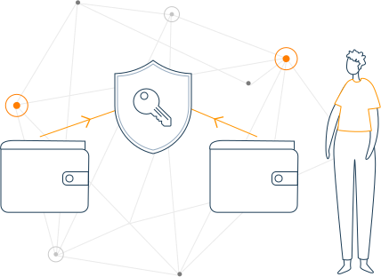

This is a question often surrounded by confusion, so here's a quick explanation!

As a new user, you can get started with Bitcoin without understanding the technical details. Once you've installed a Bitcoin wallet on your computer or mobile phone, it will generate your first Bitcoin address and you can create more whenever you need one. You can disclose your addresses to your friends so that they can pay you or vice versa. In fact, this is pretty similar to how email works, except that Bitcoin addresses should be used only once.
Balances - block chain

The block chain is a shared public ledger on which the entire Bitcoin network relies. All confirmed transactions are included in the block chain. It allows Bitcoin wallets to calculate their spendable balance so that new transactions can be verified thereby ensuring they're actually owned by the spender. The integrity and the chronological order of the block chain are enforced with cryptography.
Transactions - private keys 
A transaction is a transfer of value between Bitcoin wallets that gets included in the block chain. Bitcoin wallets keep a secret piece of data called a private key or seed, which is used to sign transactions, providing a mathematical proof that they have come from the owner of the wallet. The signature also prevents the transaction from being altered by anybody once it has been issued. All transactions are broadcast to the network and usually begin to be confirmed within 10-20 minutes, through a process called mining.
Processing - mining

Mining is a distributed consensus system that is used to confirm pending transactions by including them in the block chain. It enforces a chronological order in the block chain, protects the neutrality of the network, and allows different computers to agree on the state of the system. To be confirmed, transactions must be packed in a block that fits very strict cryptographic rules that will be verified by the network. These rules prevent previous blocks from being modified because doing so would invalidate all the subsequent blocks. Mining also creates the equivalent of a competitive lottery that prevents any individual from easily adding new blocks consecutively to the block chain. In this way, no group or individuals can control what is included in the block chain or replace parts of the block chain to roll back their own spends.
Going down the rabbit hole

This is just a short summary of Bitcoin. If you want to learn more of the details, you can read the original paper that describes its design, the developer documentation, or explore the Bitcoin wiki.